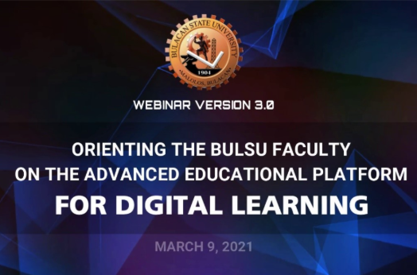
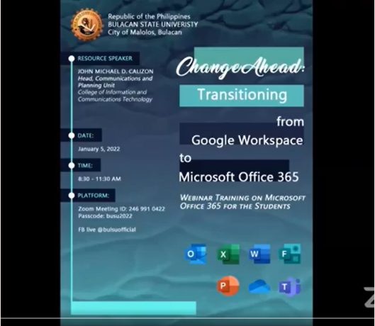
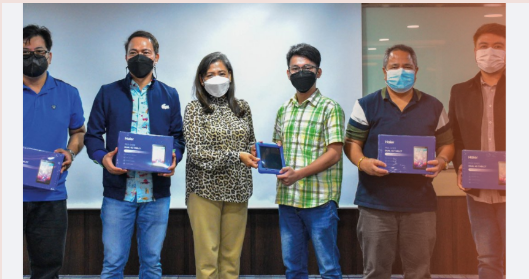
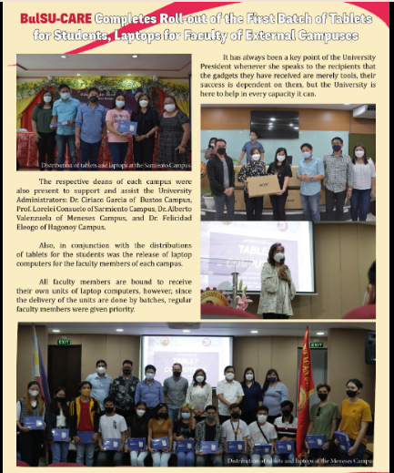

From the results and findings of research entitled “Continuing Education Through the Heights of the Pandemic”, necessary actions, policies and programs were crafted for faculty and students’ needs.
See the attached Full Paper:
CONTINUING EDUCATION THROUGH THE HEIGHTS OF THE PANDEMIC
One of the policies that was crafted is the Guidelines on the Implementation of Small Private Online Courses (SPOC) at Bulacan State University that was approved by the Board of Regents with its Resolution #73, series of 2021 (A Resolution Approving the Proposed Guidelines on the Implementation of Small Private Online Course (SPOC) at BulSU).
Attached is the Policy and Board Resolution:
Proposed Guidelines on the Implementation of Small Private Online Courses (SPOC) at Bulacan State University
After the first semester’s implementation of Small Private Online Course (SPOC) at BulSU, the instructors who were handling and the students who were learning the three SPOC subjects evaluated the implementation of SPOC. The result of the evaluation was used for an enhanced second implementation of SPOC for Academic Year 2022-2023.
See the full paper below:
BULSU PAVES THE WAY: THE FIRST IMPLEMENTATION OF SMALL PRIVATE ONLINE COURSES (SPOC)
The previous guidelines were enhanced to bring light to the requirements of the university to implement SPOC and promote its efficient use in a manner that supports the university's academic goal and is compliant with all existing policies and for its improvement. This was approved by the Board of Regents with its Resolution #2, series of 2022.
Attached is the Policy and Board Resolution:
Enhanced Guidelines on the Implementation of Small Private Online Courses (SPOC) at Bulacan State University
MARCH 9, 2021
Steady in its tracks to keep gearing and equipping its Faculty for advanced digital teaching, the Bulacan State University (BulSU) Administration, through the efforts of the Office of the Vice President for Academic Affairs (VPAA), launched the third iteration of its Faculty Webinar Series, on March 9, 2021.



On the other hand, to respond to the needs of the students and faculty members who are not capable of having a personal gadget for education purposes, the Bulacan State University distributed learning tablets to its needy students and faculty members to help with the implementation of flexible learning. Aside from 50 students from the College of Engineering and College of Education who received the tablets, there are still 5,000 more tablets that will be lent to students in various BulSU campuses in the coming months.
The post can be read in the link below:
BULACAN STATE U DISTRIBUTES TABLETS TO STUDENTS - The POST



June 2, 2022
Distribution of E-Tablets from Bulacan State University. The CCJE-Local Student Council assisted the distribution of E-Tablets.
Bulacan State University, namahagi ng mga tablet o gadget para sa kanilang mag aaral. - YouTube
Watch Video
